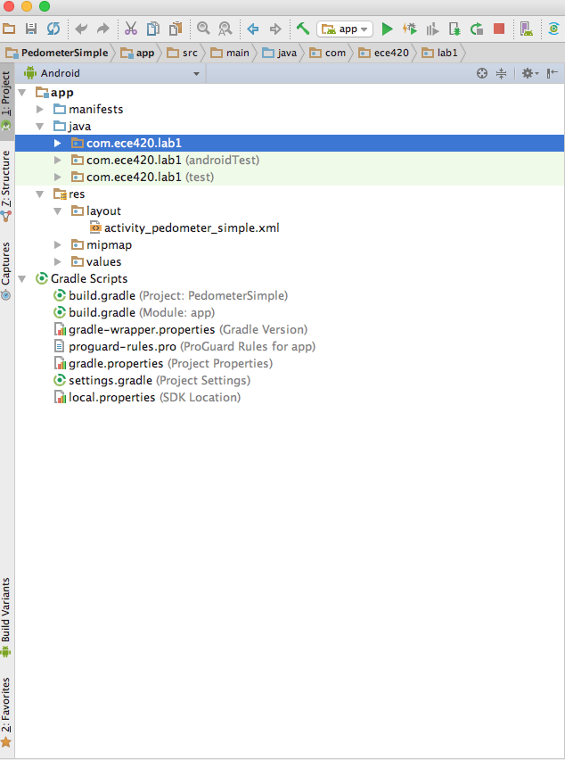

Lab 1
Summary
In this lab, you get familiarized with PyCharm and Android Studio development environment. Using a simple step detector as an example, you will write and debug your code in Python first, and later in Android.
Downloads
Python
Download PyCharm to your computer. If you are on your personal computer, you might apply for the Educational license. Install Anaconda Python distribution. The Python 3.5 distribution is used in this tutorial.
Set up Python Interpreter in PyCharm.
-
Open PyCharm. Go to PyCharm Preferences
-
Go to Project Interpreter. Navigate to Anaconda python path on your computer:
/anaconda/bin/pythonon Mac orC:\Users\YourUserName\anaconda\bin\pythonon Windows. Click OK.
Create a new Project in PyCharm.
-
Go to File -> New Project or Create New Project from the PyCharm Welcome Screen.
-
Pick a Pure Python project. Make sure the Interpreter is set to the Anaconda distribution.
-
Name your project
lab1(or a name you prefer). Click OK. -
Right click the lab1 Navigation bar. Choose New -> Python File. Name it
peak_detection.py. Click OK.
Plot the sensor data
We generated sample sensor data in the file sample_sensor_data.csv.
Copy sample_sensor_data.csv to your lab1 folder.
In the file peak_detection.py, type the following code (you may ignore line number 5):

We imported the necessary libraries (numpy, matplotlib and os) from lines 1 to 3. If your csv file is not in the lab1 folder, you can use os.chdir() to navigate to the correct path like in line 5.
The accelerometer and gyroscope data are extracted in line 11 and 12. The time vector is extracted in line 9. Let's plot the first axis of accelerometer data in line 14 and 15.
Run your program
Right click anywhere inside the code page and choose Run 'peak_detection'.
The plot is as follows:

Close the figure to stop the program from running.
Assignment 1
Give your plot a title of "First axis of accelerometer data". Name your x-axis "Time" and your y-axis "Meters per second.
Show the TA when done.
Debug your code
Click on the space between the code the the line number on line 14 to set a break point (red circle).
Right click inside the peak_detection.py or click on the Debug button on the top right corner of PyCharm (the bug symbol). The execution will stop at line 14.
In the Debug console, you can view all the variables currently created. If it is a numpy array, you can click on View as Array (at the end of the row) to view it as a table.

Debug in the IPython Console
While in the Debug mode, you can write code on the fly to test out your logic. Switch to the Console tab and choose Show Python Prompt (where the red arrow points to)
This is the python interactive console connected to your debugger. For example, let's find the maximum value of the accelerometer data in the console. Type accel_data[0].max() in the console and press enter. It should give a value of 12.507.
More info on how to step through your program here.
Define your function
Now let's define a function to find a peak in your signal. Go to the top of the function and define a function peak_detection on line 4. Please type the following lines:

The function accepts the time array t and the accelerometer data array sig.
We define a Python list of peaks on line 5. For now we detect a single peak, the maximum value of our signal. We use a for loop (line 8) to traverse through the our array sig. Initially, the max_val is set to minus infinity (why?). Every time we encounter a greater value than max_val (line 9), we record this value and its time position (line 10 and 11).
Tip
Python relies on indentation to differentiate different parts of the code.
The position and the maximum value are appended to the list of peaks in line 13. In line 14, we turn our list to numpy array for plotting and return it to the calling function.
Now that we define our function, we can call it and plot our peak. Add this line before the plot function:
max_peaks = peak_detection(timestamps, accel_data[0])
Add this line of code after the plot function (line 14).
plt.scatter(max_peaks[:,0], max_peaks[:,1], color = 'red')
Question
What is the dimension of max_peaks?
Now run or debug your program. You should see a red peak overlaid onto the signal.

Assignment 2
Modify the peak_detection function to detect other peaks in the signal. Add the new peaks and time positions to our peaks list. The function should accept a new input parameter thresh (peaks should have value greater than thresh).
Rename your python file to firstname_lastName.py when you submit it.
Here is a sample output:

Android
Download Android Studio. On the Welcome Screen, click Configure -> SDK Manager.
Switch to tab SDK tools, and check the boxes as in the figure below. These will install the requisite Java SDK, C++ NDK, and debugging tools. Click OK to install.
Choose Open an existing Android Project. Navigate to the lab1 project. It might take a few seconds for Android Studio to index the files and configurations.
.
Explore the Project
Choose the Android tab from the Project Sidebar. Expand the java and res folder. Double click on the activity_pedometer_simple.xml in the res/layout folder.

Our user interface consists of a label which says "Hello world!" and a GraphView to display our pedometer signal. Click on the text label, in the popped out Properties tool bar, change the text from "Hello World!" to "Steps Detected". Save your changes.

Drag two buttons from the Widgets in the Palette View on the left side into our PedometerSimple layout.
Switch to the Text view (at the bottom left, next to Design tab) to edit the layout of our user interface in xml.
The above xml view is before the buttons are added.
-
Right click on the line
android:id="@+id/button"and choose Refactor->Rename, and rename it tobuttonStart. Notice that all of the references to button change tobuttonStart. -
Change the text of the Buttons to "Start!" and "Stop!" (in the android:text properties). And change the
android:idof the Stop Button tobuttonStop. -
Save the xml file and switch back the Design View to see your new design.
Button event listener
Navigate to java folder. Expand com.ece420.lab1 and open PedometerSimple.java.
A TextView named textStatus and a Button named buttonStart are declared in line 25 and 26. We connect those two variables to the user interface components in line 43 to 44.
When you press the Start Button, the code from line 49 to 57 will run. These are event handlers for the button click event. We start our data collection using the SensorReader.startCollection() function and change the label textStatus to "Started".
Assignment 3
Create a variable named buttonStop (of class Button) and connect this variable to the buttonStop UI element by using the function findViewById.
Under the buttonStart.setOnClickListener() event handler, write the event handler for the buttonStop click event as follows:
If the sensorsOn variable is true, set it to false and call the StopCollection() function on the mSensorReader class instance. Also set the textStatus label to "Stopped!".
Question : What do onResume() and onPause() function do?
Please ask your TA to check your answers before continuing the next part.
Plotting the sensor data
Line 78 to 86 is where we connect our Plotting Control (GraphView) in the user interface to our java code. (your line number might change. See the figure below)
Since Android 6.0, Android apps request permissions when they are running, not when they are installed. In our code, we asked for permissions to read and write to the external storage. (line 89 to line 99).
Developer mode on the SHIELD tablet.
From the home screen of your tablet, swipe down twice and choose the Settings icon. Scroll down to the About Tablet setting. Inside the About Tablet setting, find the Build Number item. Tap 7 times, and there will be notifications informing that you are now a developer.
Go back to the main Settings menu, and choose the Developer options. Turn on the USB debugging.
Connect your tablet to your computer via USB. Say yes to the rsa-fingerprint notification.
If you are on Windows, you may need to install the OEM USB Drivers for your device. See this page for help if your device is not automatically recognized.
Run the step detector app
Go to the Run menu and choose Run app. This will handle building the Android target and uploading the APK to the device.
Choose the NVIDIA SHIELD TABLET when the Select Deployment Target screen appears. Your application will display a continuous stream of sensor data and the estimated number of steps based on the accelerometer readings.
Debugging your app.
Open StepDetector.java. Set a breakpoint at line 53 (click on the space next to the line number). In the Run menu, choose Debug app (or choose the Debug app symbol in the toolbar). Notice the similarity between PyCharm and Android Studio debugging mode.
Once your app shows up, press the Start button on the tablet to begin recording data.
Android Studio has multiple ways to step through code. For now, click Step Over to move the code to the next line.
Switch to the Android Monitor tab. You can see the output of the Log.d() function in this window. Android's Log function is a useful tool for debugging and monitoring your app.
In the Android Monitor view, type STEP_DETECTOR (the TAG that we used in the Log function) in the search field and press Enter to filter out other Log outputs.
Go back to the Debug mode, remove the breakpoint (click on the red circle) and click Resume (the play button in the left column).
Now switch back to the Android Monitor Window. Observe that whenever the code detects a peak, the Android Monitor shows the output of our Log function, which is every time the accelerometer value is greater than ACCEL_THRESHOLD (line 52).
Understanding the StepDetector class
The StepDetector class detects peaks for an online stream of data. It stores the accelerometer values in the accelBuffer list. The buffer has a size of N_SAMPLES = 11.
Question
What does timeSinceLastStep do?
Turn in your assignments
Please send your Python peak detection code (Assignment 2) to all of the TAs.
Name your file firstname_lastName.py. These should be submitted individually.